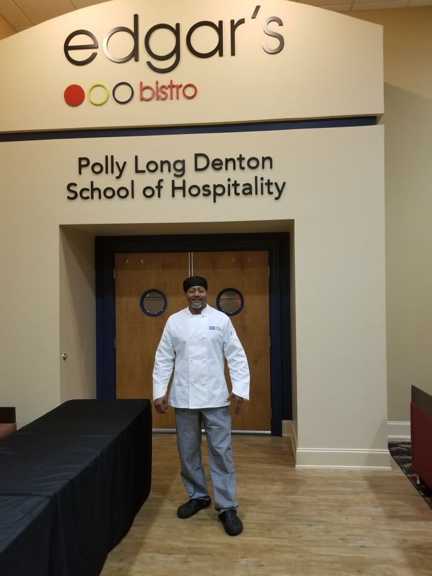
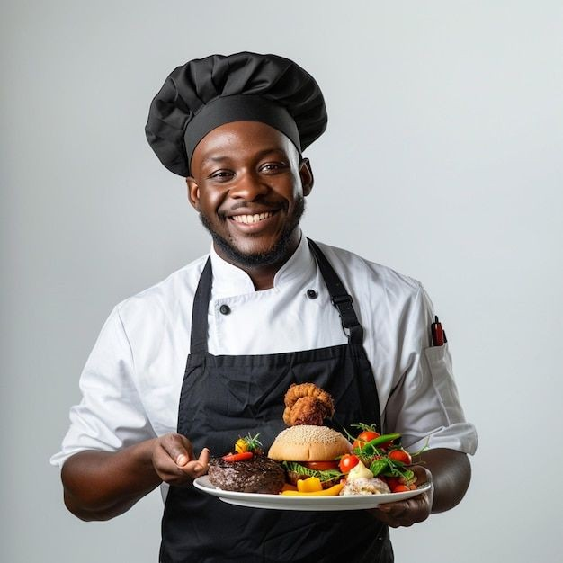
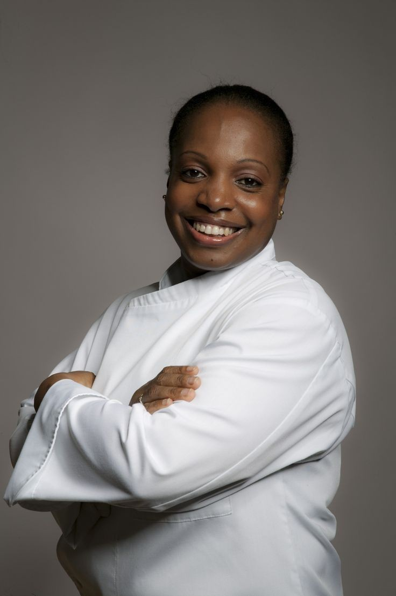
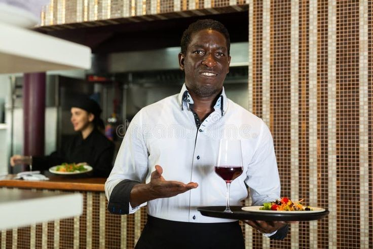

Notre Histoire
Une passion pour l'excellence culinaire depuis 2015

L'Histoire de Chris Traiteur
Fondé en 2015 par Christophe Mbayo, passionné de cuisine depuis son enfance à Kinshasa, Chris Traiteur est né d'une volonté de marier traditions culinaires congolaises et techniques gastronomiques modernes.
Ce qui a commencé comme un petit service de traiteur pour des événements privés s'est rapidement transformé en une entreprise florissante reconnue pour son excellence et son service personnalisé.
Aujourd'hui, notre équipe de 15 professionnels passionnés a le plaisir de servir plus de 200 événements par an, allant des mariages intimes aux grands galas d'entreprise.
Notre Équipe d'Exception

Christophe Mbayo
Fondateur & Chef Exécutif
15 ans d'expérience en gastronomie congolaise et internationale

Adeline Kabasele
Chef Pâtissier
Spécialiste des desserts fusion tradition-modern

David Lumumba
Directeur Événements
Organisation impeccable depuis 2017
Nos Valeurs Fondamentales
Produits Locaux
Nous travaillons exclusivement avec des producteurs locaux pour des ingrédients frais et de saison, soutenant ainsi l'économie régionale.
Passion Authentique
Chaque plat est préparé avec le même amour et la même attention que pour notre propre famille.
Excellence
Nous ne nous contentons pas de bien faire, nous visons l'exceptionnel dans chaque détail.
Notre Parcours
Fondation
Christophe commence son activité avec 2 employés et une petite cuisine à Kinshasa.
Premier Grand Événement
Organisation d'un mariage pour 200 personnes avec un menu 100% congolais revisité.
Nouvelle Cuisine
Déménagement dans un espace professionnel avec équipement haut de gamme.
Reconnaissance
Prix du "Meilleur Traiteur de Kinshasa" décerné par le Guide Gastronomique.